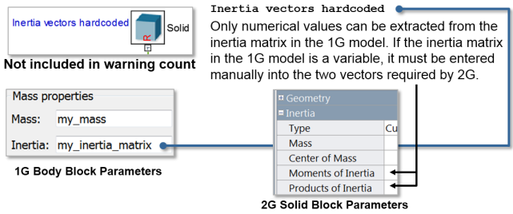
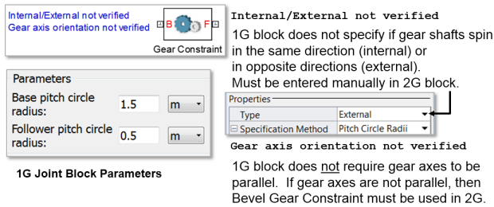

Simscape Multibody 1G Conversion Assistant
Simscape Multibody 1G Conversion Assistant Warning Messages
Convention for Diagnostics
Red: 1G-only element or convention, fix or eliminate from 1G model
Blue: Settings must be verified or adjusted in 2G blocks
Black: Information only
1. Body Warning: Reference Frame is World
2. Body Warning: Reference Frames are Unmatched
3. Body Warning: Reference Frame is Adjoining

4. Body Warning: Inertia Values Hardcoded

5. Joint Warning: Joint Axis Reference is World
6. Joint Warning: Joint Axis of Action Incorrect
7. Gear Constraint Warnings
